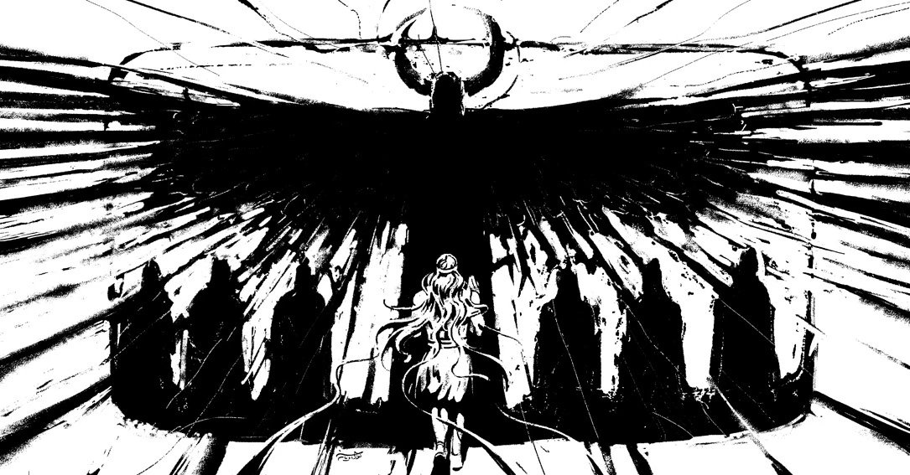

... althans, waarschijnlijk dan.
Maar!
Het zit bomvol avontuur en spektakel. Een koning die twee derde god en één derde mens is. Een wildeman die opgroeit tussen de dieren. Een vrijpartij van zes dagen en zeven nachten. Een demonische bewaker die bergen kan laten trillen. Een hemelstier die rivieren laat verdampen met één snuif. Wezens half mens, half schorpioen.
En achter dat alles: één vraag die nooit meer weggaat... wat doe je als je weet dat je ooit dood gaat.

De eerste versies van dit verhaal werden ongeveer 4000 jaar geleden in klei gekrast, in een gebied dat we nu Irak noemen.
Het verhaal is dus zo oud dat toen iemand het voor het eerst opschreef er ergens op een eiland boven Siberië nog mammoeten rondliepen. De piramides van Gizeh stonden er net een paar honderd jaar. De letter A bestond nog niet, dat zou nog meer dan duizend jaar duren!
In de eeuwen daarna werd het verhaal door schrijvers bijgewerkt, samengevoegd en op nieuwe tabletten gekopieerd, tot het rond 3200 jaar geleden zijn huidige vorm kreeg.
Hieronder een korte samenvatting van het verhaal zoals we dit nu kennen. De gave illustraties zijn van Hassan Nozadian.

In de stad Uruk regeert een koning zonder gelijke. Gilgamesh is voor twee derde een god en voor één derde mens. Sterker, mooier en sneller dan iedereen. Hij heeft de muren van Uruk gebouwd waar de hele wereld over praat.
Maar hij is ook een tiran. Hij eist dat hij met elke bruid mag slapen voordat haar man dat mag. Hij sleept jonge mannen mee in sportwedstrijden waar ze nooit van winnen. De stad is hem zat. De inwoners klagen bij de goden: doe iets aan deze koning.

De godin Aruru hoort de klacht. Ze neemt een hand klei, doopt die in water en kneedt er een wezen van. Dat wezen heet Enkidu.
Hij is even sterk als Gilgamesh. Maar hij groeit op in de wildernis. Zijn lichaam zit onder het haar, gras groeit op zijn rug, en hij drinkt uit poelen samen met de gazellen. Van mensen weet hij niets.

Een jager ziet Enkidu en schrikt zich rot. Hij gaat naar Gilgamesh voor advies. Gilgamesh stuurt Shamhat met hem mee, een vrouw die in de tempel werkt en precies weet hoe ze met mannen omgaat.
Shamhat wacht bij de drinkpoel. Als Enkidu verschijnt laat ze haar kleren vallen. Zes dagen en zeven nachten blijven ze bij elkaar. Daarna wil Enkidu terug naar zijn dieren... maar de gazellen vluchten van hem weg. Hij is veranderd. Hij hoort er niet meer bij. Shamhat geeft hem kleren, leert hem brood eten en bier drinken, en neemt hem mee naar de stad.

In Uruk hoort Enkidu over Gilgamesh en die bruiden. Hij is woest. Hij gaat voor de deur van een bruidshuis staan en blokkeert hem met zijn lichaam.
Gilgamesh komt eraan. Ze vechten. Ze smijten elkaar door de straten, muren scheuren, de stad davert. Uiteindelijk wint Gilgamesh... maar net. Voor het eerst van zijn leven heeft hij zijn gelijke ontmoet. Ze omhelzen elkaar en worden vrienden als broers. Vanaf nu doen ze alles samen.

Gilgamesh wil iets groots doen. Iets waar mensen het over blijven hebben. Zijn plan: naar het verre cederwoud reizen en Humbaba verslaan, een demon die door de goden is aangesteld om dat woud te bewaken.
Humbaba zijn gezicht ziet eruit als een verwrongen darm en zijn stem laat de bergen schudden. Enkidu is bang, hij kent het bos en hij kent de demon. Maar Gilgamesh wil zijn naam voor eeuwig vastleggen. Dus gaan ze.
Na een tocht van weken bereiken ze het woud. Ze vechten met Humbaba en winnen. De demon smeekt om zijn leven. Ze hakken zijn hoofd eraf, kappen de hoogste ceder, maken er een gigantische deur van en varen terug naar Uruk.

Gilgamesh komt thuis, schoongewassen en in mooie kleren. De godin Ishtar, godin van seks én oorlog, ziet hem en wil hem als man.
Gilgamesh wijst haar af. En niet bepaald beleefd. Hij somt op wat er met haar vorige minnaars is gebeurd: eentje veranderd in een vogel met een gebroken vleugel, eentje in een wolf, eentje in een mol.
Ishtar is razend. Ze stormt naar haar vader, de hemelgod Anu, en eist de Hemelstier, een beest waarvan elke ademhaling honderden mannen doodt. De stier daalt neer op aarde. Bij elke snuif zakt de rivier de Eufraat tientallen meters. Gilgamesh en Enkidu vechten samen en doden het beest. En dan gooit Enkidu een afgerukt been van de stier naar Ishtar. Brutaler kan bijna niet.

De goden vergaderen. Twee gewone stervelingen hebben hun bewaker gedood én hun stier afgeslacht. Iemand moet boeten. Niet Gilgamesh, die is voor twee derde god. Maar Enkidu...
Enkidu wordt ziek. Twaalf dagen lang ligt hij in koorts. Hij droomt over het land van de doden: een huis vol stof, geen licht, en de bewoners dragen veren als vogels. Dan sterft hij.
Gilgamesh weigert het te geloven. Hij blijft zes dagen en zeven nachten naast het lichaam zitten. Pas als hij een worm uit de neus van zijn vriend ziet kruipen, dringt het door. Enkidu is echt weg. En voor het eerst denkt Gilgamesh: dit gebeurt straks ook met mij.

Gilgamesh laat zijn stad achter zich. In dierenhuiden zwerft hij door de woestijn. Hij wil de enige man vinden die ooit aan de dood is ontsnapt: Utnapishtim, een verre voorvader die de zondvloed overleefde en van de goden eeuwig leven kreeg.
De reis is bizar. Hij komt bij de berg Mashu, waar de zon elke nacht onderdoor gaat. De poort wordt bewaakt door schorpionmensen — half mens, half schorpion, zo angstaanjagend dat één blik genoeg is om je te doden. Ze laten hem door. Hij rent door de pikzwarte tunnel, de zon op zijn hielen, en komt uit in een tuin waar de bomen edelstenen dragen.
Aan de rand van de wereld ontmoet hij een vrouw die bier brouwt. Daarna steekt hij over de Wateren van de Dood, naar het eiland van Utnapishtim. En daar krijgt hij het slechte nieuws: eeuwig leven was eenmalig. Niet te herhalen.

Maar Utnapishtim vertelt hem over een plant op de zeebodem die je weer jong maakt. Gilgamesh bindt stenen aan zijn voeten, duikt naar beneden en vindt hem echt. Op de terugreis stopt hij bij een poel om te baden. Een slang ruikt de plant, glijdt erbij, slikt hem in en kruipt weg... onderweg zijn oude huid afpellend in de modder.
Gilgamesh zit aan de oever en huilt. Geen eeuwig leven. Geen plant. Niks.
Hij gaat terug naar Uruk. Hij staat voor de muren die hij heeft gebouwd. En dan snapt hij het: dít is wat van hem overblijft. Niet zijn lichaam. De stad.
Later is nog een twaalfde tablet aan het epos toegevoegd, een schildering van de onderwereld.
Het is een vrij letterlijke vertaling van een oudere, Sumerische
voorloper van het epos (
"Bilgames, Enkidoe en de onderwereld"), maar de
loop van het verhaal klopt niet helemaal, want Enkidoe is opeens weer
levend en daalt af in de onderwereld om speelgoed van Gilgamesj op te
halen.
Dat klopt verhaaltechnisch niet, en daarom laten de meeste vertalers het weg. Maar het hoort wél bij de geschiedenis van het verhaal. Vandaar dat het hier toch een plekje krijgt.

Gilgamesh laat een speciale bal in een gat vallen dat naar de onderwereld leidt. Enkidu biedt aan om hem op te halen. Gilgamesh waarschuwt: gedraag je daarbeneden als een dode, niet als een levende, anders kom je nooit meer boven.
Enkidu vergeet alle waarschuwingen. Hij wordt vastgehouden in het dodenrijk. Met hulp van een god krijgt Gilgamesh nog één gesprek met hem, niet in levenden lijve, maar als geest. Enkidu vertelt hoe het er beneden aan toe gaat. Geen heldenrijk. Een grijs huis vol stof. Wie kinderen achterliet heeft het iets beter. Wie helemaal niemand achterliet, eet uit de goot. Daar eindigt het.
Het verhaal komt uit Mesopotamië, het huidige Irak. Mensen schreven daar niet op papier, maar met een rietstift in natte klei: het spijkerschrift. De oudste stukken zijn zo'n 4000 jaar oud. De versie die we nu het meest lezen (twaalf tabletten lang) werd rond drie duizend tweehonderd jaar geleden samengesteld door een schrijver die we kennen als Sin-leqi-unninni.
Daarna raakte het verhaal eeuwenlang vergeten. Pas in 1853 doken de eerste tabletten weer op. De Engelse onderzoeker George Smith las in 1872 ineens een passage over een grote vloed, een ark en een uitgestuurde vogel. Duizenden jaren ouder dan Noach uit de bijbel. Hij raakte zo opgewonden dat hij volgens getuigen zijn kleren begon uit te trekken.
Hierboven vind je naast een verzameling korte en lange documentaires ook het verhaal in zijn geheel voorgelezen!
Het verhaal is vier duizend jaar oud. De vragen erin zijn van vorige week.
- Wat doe je als je weet dat je ooit doodgaat?
- Wat is iemand waard als je hem verliest?
- Mag je de natuur kapotmaken voor je eigen roem?
Een fijn rond antwoord komt er niet. Gilgamesh krijgt geen eeuwig leven. Hij verliest zijn vriend, hij verliest de plant en hij gaat met lege handen naar huis. Maar thuis, voor zijn eigen muren, snapt hij het: je leeft alleen voort in wat je voor anderen achterlaat.
En historisch gezien is het goud. Gilgamesh is een van de oudste lange verhalen die we hebben, en het laat zien dat mensen toen al verhalen vertelden zoals wij nu, vol helden, tegenkrachten, een climax, verlies, terugkeer en inzicht.
Deze illustraties over Gilgamesh en Enkidu zijn van Wael Tarabieh, een Syrische kunstenaar en activist.
Gilgamesh is ouder dan bijna alles waar je het mee zou vergelijken. Dus dit verhaal heeft ándere verhalen gevormd, niet andersom. Een paar voorbeelden.
De Griekse heldendichten Ilias en Odyssee zijn zo'n 2800 jaar oud, meer dan 1000 jaar jonger dan Gilgamesh. Achilles die rouwt om zijn vriend Patroclus en daarna woedend tegen de dood ingaat? Bijna één op één Gilgamesh om Enkidu. En Odysseus die de onderwereld bezoekt en zijn dode kameraden spreekt, heeft een directe voorouder in tablet twaalf.
De halfgod met zijn bovenmenselijke kracht, zijn lange reeks heldendaden, zijn tocht naar de onderwereld en zijn gevecht met de goden lijkt sterk op Gilgamesh. Veel onderzoekers zien duidelijke parallellen... al is niet hard te bewijzen hoe de invloed precies is gelopen.
Enkidu leeft naakt in de natuur, tussen de dieren. Een vrouw brengt hem seks, kleding en mensheid. En daarna kan hij niet meer terug. Die structuur (een onschuldig natuurwezen dat door een vrouw en kennis zijn dierlijke leven kwijtraakt) lijkt op Adam en Eva uit Genesis. Niet exact hetzelfde, maar de echo zit er duidelijk in.